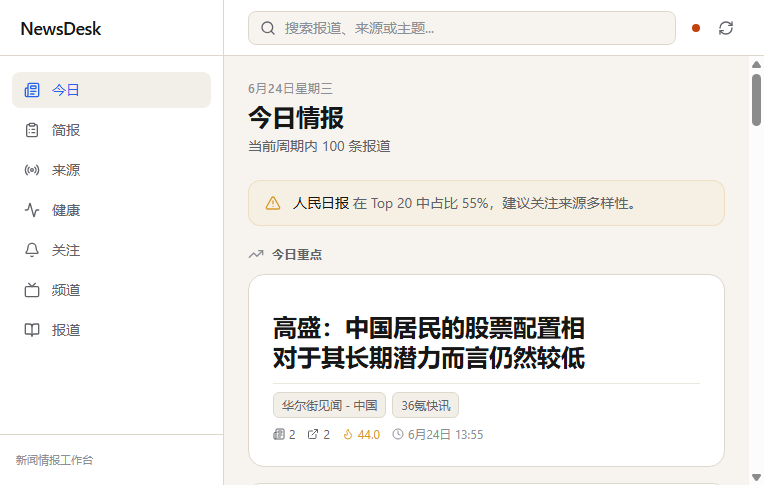

核心能力
📡
多源聚合
管理 RSS / RSSHub 来源，自动去重、相似度聚类，将多篇文章归为一个 Story。
🔥
热度与状态
根据来源数、文章数、更新时间计算 heat_score，自动标记 new / developing / stable。
🖼️
分区看板
今日重点、有图报道、正在升温、文字情报，让信息密度与可读性兼得。
🔍
全文搜索
支持按报道标题、摘要、来源名称实时搜索，结果即时呈现。
📰
来源与文章详情
来源页展示最近文章、进入的报道与抓取记录；文章可在应用内直接阅读。
🖥️
桌面端封装
基于 Tauri 2 的 Windows 安装包，系统托盘、后台驻留、一键抓取。
快速开始
下载安装包后运行 NewsDesk_0.1.0_x64-setup.exe，安装完成即可使用。首次启动会自动建表并写入示例来源。
开发者可克隆仓库后分别启动后端与前端：
# 后端
cd backend
.venv/Scripts/python -m uvicorn app.main:app --host 127.0.0.1 --port 8000
# 前端
cd frontend
npm install
npm run dev